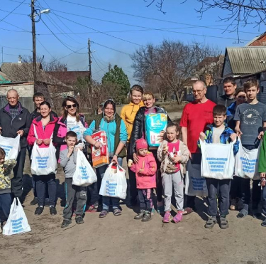

<section class="section start js-start">
    <div class="container">
        <div class="start__wrapper">
            <h1 class="start__text">
                We are volunteers helping people in the most dangerous parts of Kharkiv -
                a frontline city in this horrific war in Ukraine
            </h1>

            <button class="btn btn__start js-contact ">Contact us</button>
        </div>
    </div>
    <picture class="picture">
        <source
                media="(min-width: 600px)"
                srcset="../img/start-desck.jpg, ../img/start-desck@2x.jpg 2x"
        />
        
    </picture>
</section>